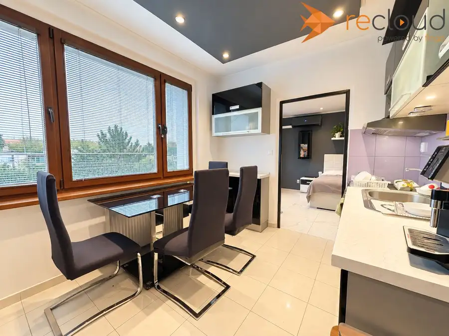
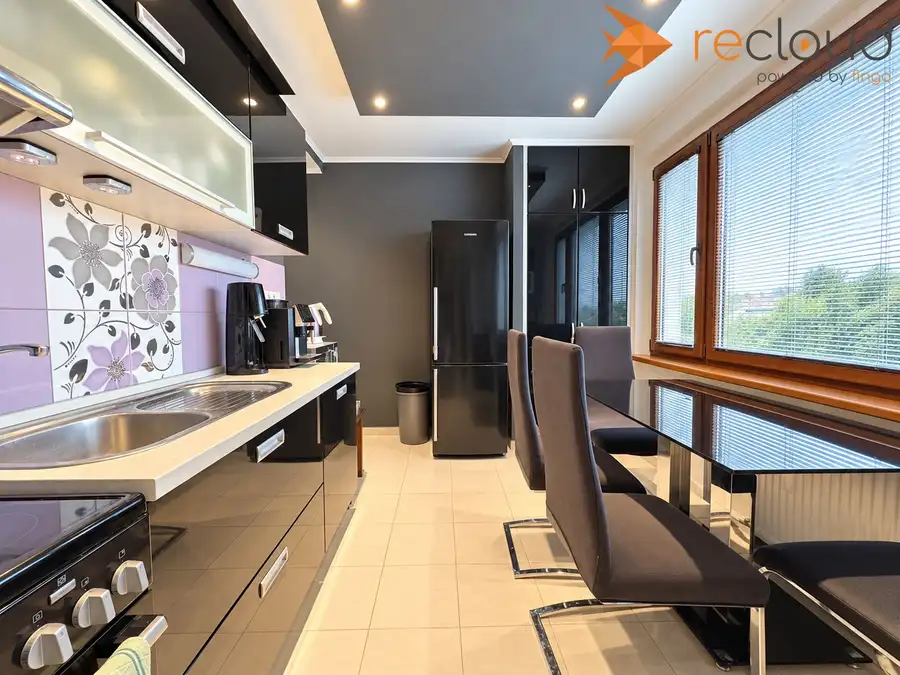
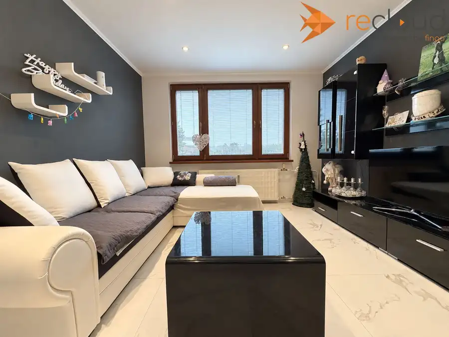
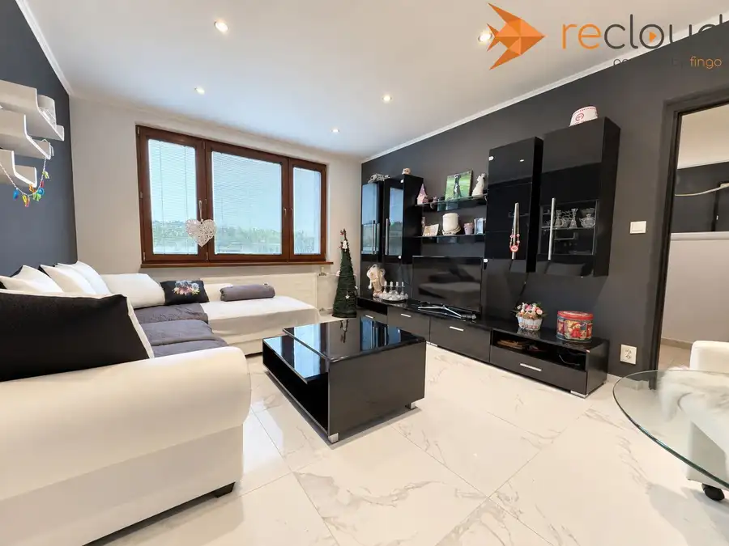
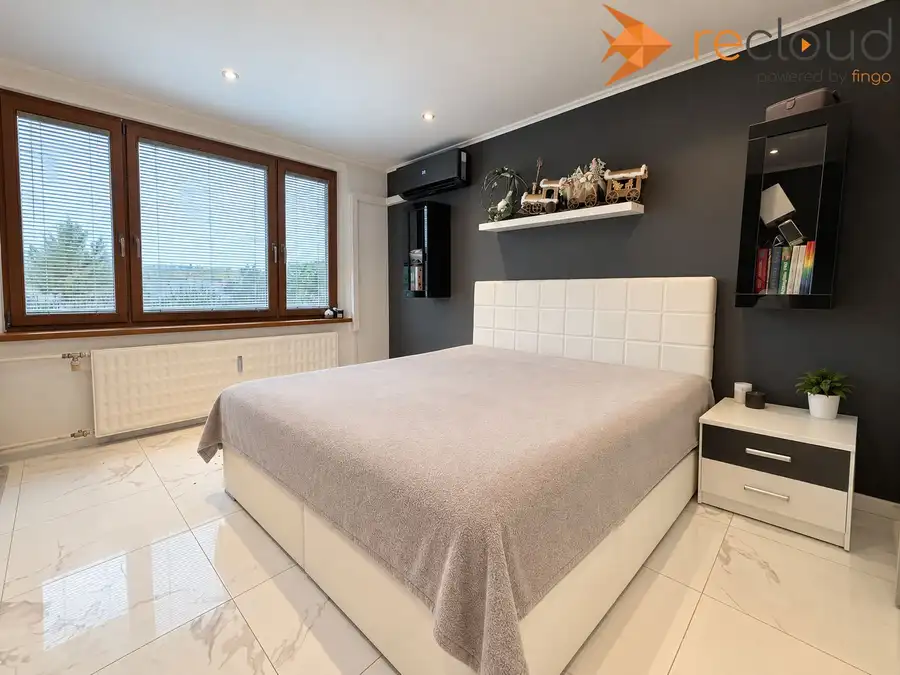
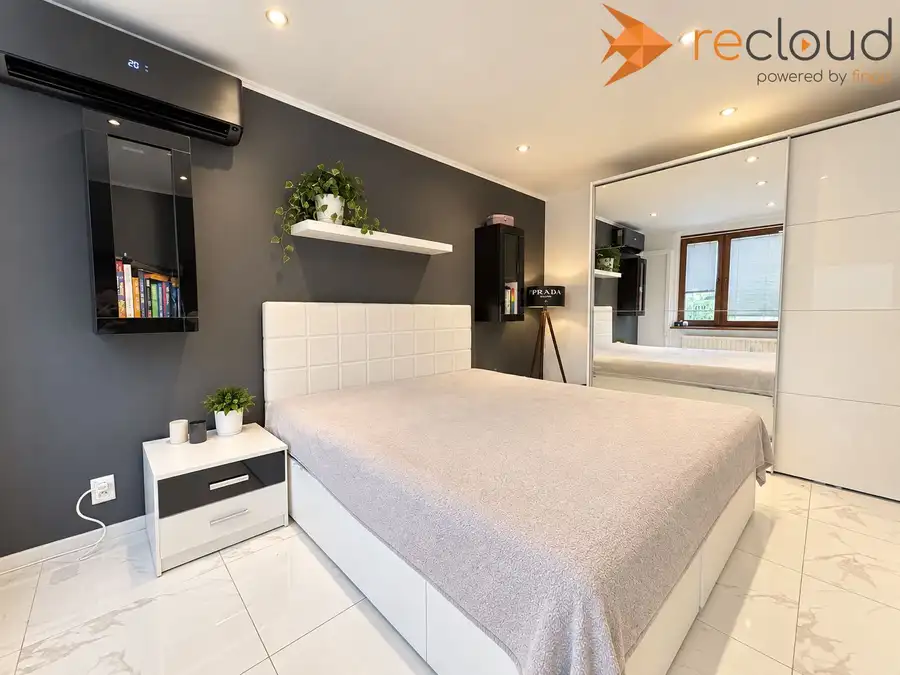
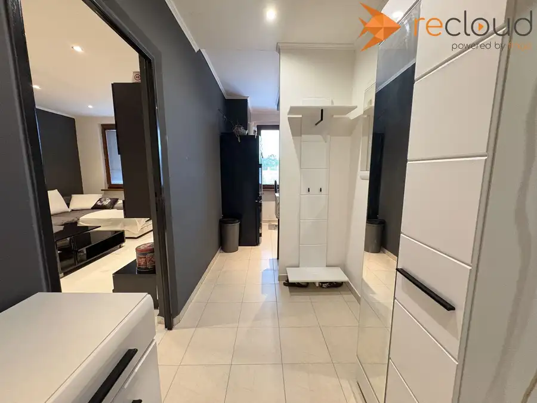

PREDAJ | Kompletne zrekonštruovaný 2-izbový byt - Šahy
Šahy







- Dispozícia2-izbový
- Plocha51.55 m²
- Poschodie3. z 4
- StavVo výstavbe
- VlastníctvoOsobné
O nehnuteľnosti
Realitná kancelária HQ Business Vám ponúka na predaj kompletne zrekonštruovaný a zariadený 2-izbový byt v meste Šahy.Byt s celkovou výmerou 51,55 m² sa nachádza na najvyššom podlaží zatepleného tehlového bytového domu. V roku 2017 prešiel kompletnou rekonštrukciou a jeho veľkou výhodou je, že sa predáva kompletne zariadený.Nový majiteľ tak nemusí riešiť rekonštrukciu ani zariaďovanie – byt je pripravený na okamžité bývanie, prípadne na ďalšie využitie ako investičná nehnuteľnosť na prenájom.ZÁKLADNÉ INFORMÁCIE:• úžitková plocha: 51,55 m²• 2 izby• Tehlový bytový dom• 3 poschodie• Bez výťahu• Pivnica• Zateplený bytový dom• Spoločné ústredné vykurovanie• Klimatizácia• Byt sa predáva kompletne zariadenýDISPOZÍCIAByt pozostáva zo vstupnej chodby, samostatnej kuchyne s jedálenskou časťou, obývacej izby, spálne a kúpeľne s WC.Kuchyňa ponúka dostatok pracovnej aj úložnej plochy a jej súčasťou je jedálenský stôl so stoličkami.Obývacia izba je priestranná a svetlá, s dostatkom priestoru na oddychovú aj úložnú časť.Samostatná spálňa disponuje klimatizáciou a veľkou šatníkovou skriňou so zrkadlovými posuvnými dverami.Kúpeľňa s WC je vybavená sprchovacím kútom a priestorom pre práčku a sušičku.REKONŠTRUKCIA A VYBAVENIEKompletná rekonštrukcia bytu bola realizovaná v roku 2017. Pri rekonštrukcii sa dôraz kládol nielen na technickú stránku, ale aj na jednotný vzhľad interiéru.Súčasťou bytu sú:• Drevené eurookná• Klimatizácia• Talianska dlažba v obývacej izbe a spálni• Nové stierky• Znížené stropy• Bodové osvetlenie• Zrekonštruovaná kúpeľňa• Kuchynská linka so spotrebičmi• Kompletné zariadenie bytuInteriér je ladený do kombinácie bielej, čiernej a tmavosivej, ktorú dopĺňajú drevené eurookná. Byt pôsobí moderne a vďaka veľkým oknám má dostatok prirodzeného svetla.KOMPLETNE ZARIADENÝJednou z hlavných výhod ponuky je, že byt zostáva kompletne zariadený. Nábytok a vybavenie, ktoré vidíte na fotografiách, zostávajú súčasťou predajaPre nového majiteľa to znamená minimum starostí a možnosť byt prakticky okamžite využívať na bývanie alebo prenájom.NÁKLADY NA BÝVANIE180 € / mesiac + elektrina približne 30 € / mesiac.CENA: 79 000 €Byt predstavuje zaujímavú voľbu pre jednotlivca alebo pár, ktorí hľadajú hotové bývanie bez potreby ďalšej rekonštrukcie a zariaďovania. Vďaka kompletnej výbave je zároveň vhodný aj pre investora, ktorý ho môže po kúpe prakticky okamžite ponúknuť na prenájom.V prípade záujmu o viac informácií alebo obhliadku nás neváhajte kontaktovať.V cene je zahrnuté:• provízia realitnej kancelárie• kompletný právny servis v spolupráci s advokátskou kanceláriou• pomoc so zabezpečením najvýhodnejšieho financovaniaKontakt:Dominik Jankovič+421 903 771 330dominik.jankovic@hqbusiness.sk
Parametre
- Cena vrátane energií
- Nie
- Druh
- 2 izbový byt
- Dátum zverejnenia
- 18. 09. 2026
- Energetický certifikát budovy
- nie je
- Orientácia
- Východná
- Podlažie
- 3
- Počet nadzemných podlaží
- 4
- Rok kolaudácie
- 1978
- Rok poslednej rekonštrukcie
- 2017
- Stav nehnuteľnosti
- Vo výstavbe
- Telekomunikácie
- Internet
- Typ
- Predaj
- Typ konštrukcie
- Tehlová
- Umiestnenie
- Posledné podlažie
- Vlastníctvo
- Osobné
- Vykurovanie
- Ústredné
- Zariadenie
- Čiastočne zariadené
- Úžitková plocha
- 51.55 m²